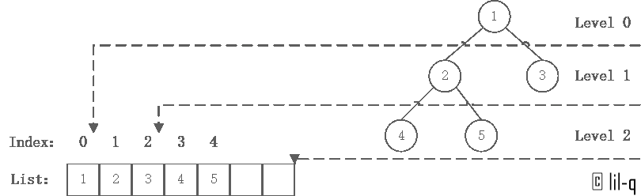

经过努力，最值总会冒上来的！
定义
- 在通常情况下，使用列表储存堆，堆树是一颗完全二叉树，二项堆和斐波那契堆不属于二叉树
- 堆树中某个节点的值总是不大于或不小于其孩子节点的值
- 堆树中每个节点的子树都是堆树
当父节点的键值总是大于或等于任何一个子节点的键值时为最大堆。 当父节点的键值总是小于或等于任何一个子节点的键值时为最小堆。 本文以最大堆作为例子，最小堆类似。
堆的建立
堆的建立并不建立一个新的树，而是对数组进行原地改动，第一个数（index=0）为完全二叉树的level 0，即根，第二个数和第三个数为level 1，以此类推。

由于数组是升序数组，我们直接得到了最小堆。但是如果要进行升序排序，算法上需要建立最大堆。也就是说，当原数组是升序时，堆排序算法遇到了最坏情况。本文也以这种情况作为例子。
1 | nums=[1,2,3,4,5] |
堆的维护
上图的根节点是1，小于子节点，那么这显然违反了最大堆的性质，这时候需要让该元素在最大堆中逐级下降，维护最大堆的性质。处理一次维护的代码如下：
1 | def adjust_heap(idx, max_len,nums): |
建立最大堆
- 自底向上处理， 因为数组
list[n//2,n]中的所有元素都在堆树的叶节点中，因此可以看成只包含一个元素的堆， 无需维护。其中n=len(list)。 - 从
index=n//2-1开始，直到index=0，对每一个节点或根进行一次维护。
注意：一次维护并不是最多只交换一次，而是交换到某节点满足最大堆条件或者index>=n为止。

1 | def build_heap(nums): |
最大堆中插入节点
最大堆的插入节点的思想就是先在堆的最后添加一个节点，也就是在list.append()，然后沿着堆树上升。跟最大堆的初始建立过程大致相同。
1 | def heap_insert(heap,num): |

最大堆节点的删除
对一个节点的删除就是交换该节点和最后一个叶子节点的值，然后从该节点开始一次adjust_heap()
1 | def heap_delete(heap,idx): |
堆排序
特殊地，当我们交换根和最后一个叶子节点时，就能够提出最大值，并且存放在index=-1的位置。然后再对前n-1个数组成的最大堆进行该处理，以此类推，最终完成堆排序。
1 | def heap_sorted(heap): |
错误与不足请不吝指正，转载请注明，谢谢